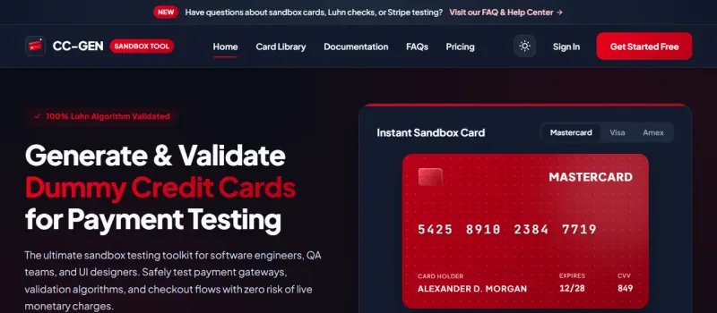

Live
HAQI
Live air-quality intelligence
A 3D world risk map combining live AQI, weather and fire data with traceable evidence.
Work
Live applications, built end to end — from the interface down to the logic behind it.
Live air-quality intelligence
A 3D world risk map combining live AQI, weather and fire data with traceable evidence.

Dummy card generator
Luhn-validated card generation, test matrix and bulk exports.

AI concept mashup generator
A concept engine that fuses unlikely domains into buildable ideas.

Analog & digital web clock
A 60fps sweep clock with a Web Audio tick, four themes and world time zones.